Introduction to 3D Printing:
3D printing, also known as additive manufacturing, is a revolutionary technology that has transformed the way objects are designed, prototyped, and produced. Unlike traditional manufacturing methods that involve subtracting material through machining or molding, 3D printing builds objects layer by layer from the ground up. This process offers unprecedented flexibility, speed, and customization in creating a wide range of objects, from simple prototypes to complex components.
Key Principles:
- Additive Manufacturing:
Traditional manufacturing often involves subtracting material from a larger piece, like carving a sculpture from a block of wood. In contrast, 3D printing adds material layer by layer, following a digital model. - Digital Design:
The foundation of 3D printing lies in digital design. Objects are created using computer-aided design (CAD) software, which allows for precise control over every aspect of the design. - Layer-by-Layer Construction:
3D printers follow the digital design and construct objects layer by layer. Each layer can be extremely thin, allowing for intricate and complex geometries that would be challenging or impossible with traditional manufacturing methods.
Types of 3D Printing Technologies:
- Fused Deposition Modeling (FDM):
- FDM is one of the most common 3D printing technologies. It involves melting a thermoplastic filament and depositing it layer by layer to create the final object. FDM is widely used for prototyping and producing functional parts. - Stereolithography (SLA):
- SLA utilizes a liquid resin that is cured layer by layer using ultraviolet light. It is known for its high level of detail and precision, making it suitable for applications such as dental models and jewelry. - Selective Laser Sintering (SLS):
- SLS uses a laser to selectively fuse powdered materials, such as plastics, metals, or ceramics, layer by layer. It is particularly valued for its ability to work with a variety of materials. - PolyJet Printing:
- PolyJet technology jets layers of liquid photopolymer onto a build tray, which are then cured by UV light. This method enables the simultaneous use of multiple materials and colors in a single print, making it popular for creating realistic prototypes.
Applications:
- Prototyping:
3D printing is widely used for rapid prototyping, allowing designers and engineers to quickly iterate and test their concepts before moving to mass production. - Customization:
The technology excels in creating customized and one-of-a-kind products, ranging from personalized medical implants to tailored consumer goods. - Aerospace and Automotive:
In these industries, 3D printing is used to create lightweight yet robust components, reducing overall weight and improving fuel efficiency. - Medical:
3D printing has revolutionized the medical field, enabling the production of patient-specific implants, prosthetics, and even organs through bioprinting. - Education:
3D printing is increasingly used in educational settings to teach students about design, engineering, and manufacturing processes in a hands-on manner.
Challenges and Future Prospects:
While 3D printing has made significant strides, challenges such as material limitations, speed, and cost remain. However, ongoing research and development promise to address these issues, opening the door to even more widespread adoption and innovative applications in the future. As technology continues to evolve, 3D printing is poised to play a pivotal role in shaping the way we design and produce objects across various industries. New technology about material Various advancements and innovations in 3D printing materials have been occurring, contributing to the expansion of possibilities and applications for this technology. Here are some notable trends and developments in 3D printing materials:
- High-Performance Polymers:
The range of 3D printing polymers has expanded to include high-performance materials with enhanced mechanical, thermal, and chemical properties. Examples include PEEK (Polyether Ether Ketone) and PEI (Polyetherimide), which are used in industries such as aerospace and medical for applications requiring strong, heat-resistant, and biocompatible materials. - Metal 3D Printing Alloys:
Metal 3D printing, also known as additive manufacturing with metals, has become increasingly sophisticated. New metal alloys are being developed, offering improved strength, durability, and thermal properties. Applications in aerospace, automotive, and healthcare are benefiting from the ability to 3D print with metals like titanium, aluminum, and nickel-based alloys. - Biodegradable and Sustainable Materials:
There is a growing emphasis on environmentally friendly 3D printing materials. Biodegradable and compostable filaments, often derived from renewable resources like cornstarch or sugarcane, are gaining popularity. These materials are used in projects where sustainability and eco-friendliness are prioritized. - Multi-material Printing:
Advances in 3D printing technology have enabled the simultaneous use of multiple materials within a single print. This capability allows for the creation of complex and functional objects with diverse properties. For example, flexible and rigid materials can be combined in a single print job. - Concrete and Construction Materials:
3D printing is making inroads into construction with the development of concrete and other construction-grade materials suitable for large-scale 3D printing. This technology has the potential to revolutionize the construction industry by enabling the rapid and cost-effective construction of buildings and infrastructure. - Carbon Fiber-Reinforced Composites:
Carbon fiber-reinforced materials offer enhanced strength and stiffness, making them suitable for applications where lightweight and robust components are essential. These materials are being used in aerospace, automotive, and sporting goods manufacturing. - Smart and Functional Materials:
3D printing is being used to create smart materials with unique properties, such as shape memory polymers and materials with embedded sensors. These materials find applications in fields like healthcare, where customized medical implants with specific functionalities can be produced. - Nanomaterials:
The integration of nanomaterials, such as graphene or carbon nanotubes, into 3D printing filaments is being explored to enhance material properties. Nanocomposites offer improved mechanical strength, thermal conductivity, and electrical conductivity, opening up new possibilities in various industries. It's important to note that the field of 3D printing materials is dynamic, and ongoing research and development continually introduce new materials and improve existing ones. For the latest information on 3D printing materials and technologies, it's advisable to consult recent publications, industry news, and the websites of 3D printing material manufacturers.
3D Printing Machine :
3D printing machines, also known as 3D printers or additive manufacturing machines, have evolved significantly, offering a range of technologies and capabilities. Here are key aspects to consider when discussing 3D printing machines:
- Printing Technologies:
Fused Deposition Modeling (FDM): FDM is one of the most common 3D printing technologies. It involves melting thermoplastic filaments and layering them to create objects. Stereolithography (SLA):
SLA uses a liquid resin cured by ultraviolet light, resulting in high-resolution prints with smooth surfaces. - Materials Compatibility:
3D printers can work with various materials, including plastics (PLA, ABS), metals (aluminum, titanium), ceramics, composites, and more. The choice of material depends on the intended application and the capabilities of the printer. - Build Volume:
The build volume defines the maximum size of objects that a 3D printer can create. Larger build volumes are suitable for producing bigger or multiple objects in a single print job. - Resolution and Layer Thickness:
Resolution refers to the level of detail a 3D printer can achieve. It is often measured in microns, indicating the thickness of each printed layer. Lower layer thickness generally results in higher resolution prints. - Dual Extrusion and Multi-Material Printing:
Some 3D printers feature dual extruders, allowing the use of two different materials or colors in a single print. Multi-material printing enables the creation of complex, multi-component objects. - Ease of Use and Connectivity:
Modern 3D printers often come with user-friendly interfaces, touchscreen displays, and connectivity options such as USB or SD card slots. Some are also compatible with wireless connections. - Open Source vs. Closed Source:
Some 3D printers and their associated software are open source, allowing users to modify and customize them. Closed-source systems, on the other hand, may have more restricted capabilities but can offer a more straightforward user experience. - Applications:
3D printers are used across various industries, including manufacturing, healthcare, automotive, aerospace, education, and consumer goods. Applications range from rapid prototyping and custom part production to creating intricate and personalized items. - Cost:
The cost of 3D printers varies widely based on factors like technology, build volume, features, and brand. Entry-level consumer printers are more affordable, while industrial-grade machines can be significantly more expensive. It's important to note that 3D printing technology evolves rapidly, and there may be new developments or trends in the field. Always refer to the latest information provided by manufacturers and the 3D printing community for the most up-to-date details on 3D printing machines.
.png)
.png)
Selective Laser Sintering (SLS): SLS employs a laser to fuse powdered materials (usually plastics, metals, or ceramics) layer by layer, allowing for a wide range of material options.
.png)
PolyJet Printing: This technology jets layers of liquid photopolymer onto a build tray, with each layer cured by UV light. It allows for multi-material and multi-color printing in a single job.
.png)
- The worlds first 3D printed house
.png)
Dutch architectural firm DUS is working diligently to make the worlds first 3D printed house a reality. The plan is to make the house out of modular pieces. The pieces will be printed on site at the Buiksloter Canal in Amsterdam. Each piece will initially be printed at a scale of 1:20 before the final pieces are made at 1:1. Aptly named the 3D Print Canal House, the project is an experiment that hopes to ultimately solve housing needs of the 7 billion people on the planet.
- Michael Winstone scans and 3D prints 8m/26ft tall tree statues
.png)
For the past 20 years, Michael Winstone has traveled the worlds forests to scan and 3D print trees that are in danger of being cut down. His work is currently on display in museums, galleries and private displays around the world. His most famous work is 41°40’00’’N.00°54’30’’W, and other permanent public works include “N1-53-32-8:132º42′.34º45′.JA” in Takamiya, Hiroshima, Japan and “IGN.185: iv.269.904, Coto Redondo, Pontevedra, Spain.” His sculptures feature human-like plant forms and simple fractal elements. These join together to create complex organic-shaped structures that feature “self-similarity” in anatomic texture, body and construction. Winstones 3D printed trees preserves the bark striations and forms of real trees that no longer exist, as well as current trees that may be lost to disease, old age, or ongoing deforestation.
- A big 3D printed table inspired by roots
.png)
Furniture designer Mathias Bengtsson creating a fascinating large 3D printer project like no other. He printed a tree 4.2-m-long (14 feet) table in solid bronze. Instead of going for a traditional, geometric shape, he decided to take his inspiration from nature and imitated a trees roots for his design. Read more about this Big Growth Table in our blog post.
- Minibuilder” robot prints large structures on site
.png)
3D Printing large objects, require a large printer. Advanced Architecture of Cataloinia are removing those size restrictions by using mobile 3D printer robots. Nicknamed the “Minibuilders” these robots provide the ability to 3D print directly on site, with the idea being that a home would be built out of modules that are pieced together. A demonstration piece has already been created using the robots. You can watch that video here.
3D Printed Big Project
Smart Materials in PolyJet Printing
Introduction : PolyJet 3D printing, known for its ability to create complex multi-material objects with high precision, has become a focal point for research at the intersection of materials science and additive manufacturing. One of the exciting frontiers in this field involves the integration of smart materials into the PolyJet printing process. Smart materials, characterized by their ability to respond to external stimuli, introduce a dynamic and adaptive dimension to 3D printed objects. This synergy holds great promise for revolutionizing diverse industries, from healthcare to electronics, by imparting unique functionalities to printed structures.
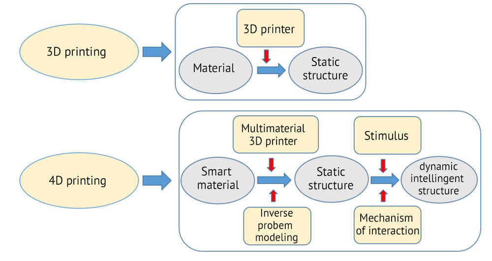 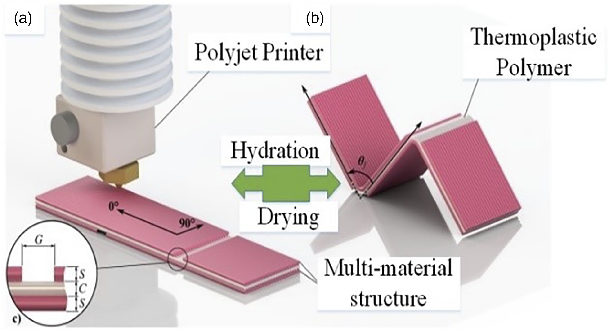1. Types of Smart Materials:
Shape Memory Polymers (SMPs):

pic:1
These materials have the ability to return to a predetermined shape when subjected to a specific stimulus, such as heat. In PolyJet printing, SMPs can be utilized to create self-deforming structures or components that respond
to temperature changes.
Stimuli-Responsive Polymers: Smart polymers that undergo reversible changes in their structure or properties in response to external stimuli, such as light, temperature, pH, or moisture. These materials can be integrated
into PolyJet processes to achieve objects with tunable mechanical properties.
Piezoelectric Materials:
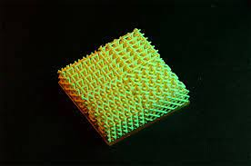These materials generate an electric charge in response to mechanical stress and vice versa. Integration into PolyJet printing can lead to the creation of sensors, actuators, or energy harvesting devices within printed structures.
2. Challenges in Integration:
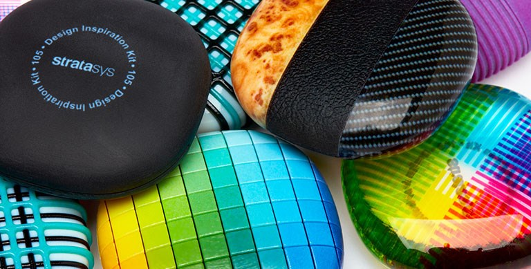pic:1
Printability and Compatibility: Ensuring that smart materials are compatible with PolyJet printers and can be processed without compromising their inherent properties presents a significant challenge. Achieving a balance between the desired material characteristics and printability is crucial. Resolution and Precision: Smart materials often require precise control over the printing process to retain their unique properties. Overcoming challenges related to the resolution of PolyJet printers is essential for successfully incorporating these materials.
3. Applications and Implications:
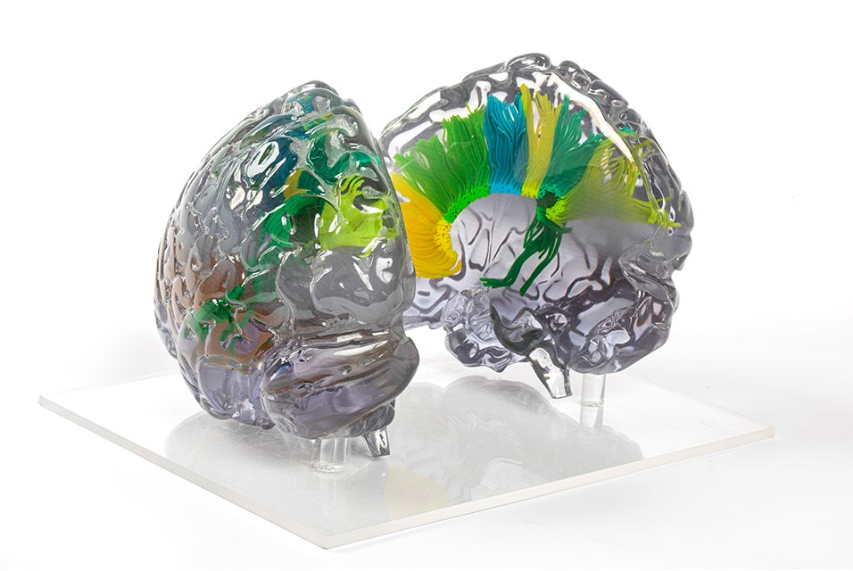pic:1
Adaptive Structures: Smart materials enable the creation of objects with adaptive capabilities, such as self-healing structures or components that can change their shape in response to environmental conditions.
Biomedical Devices: The integration of stimuli-responsive materials in PolyJet printing holds promise for creating personalized medical devices, drug delivery systems, and implants that can respond to specific physiological
cues.
Electronics and Sensors: Piezoelectric materials integrated into PolyJet prints can pave the way for the development of 3D printed electronics, sensors, and actuators with intricate geometries and enhanced functionalities.
4. Future Directions:
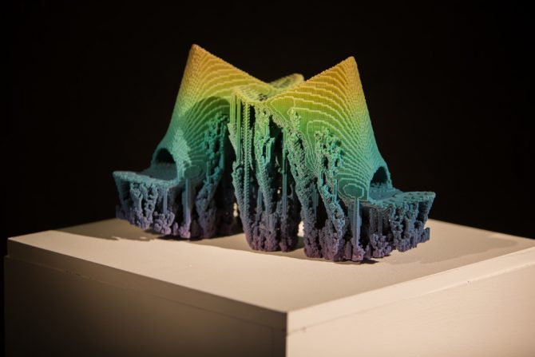Research in smart materials and PolyJet printing is poised to explore novel compositions, printing techniques, and applications. Future directions may include the development of more sophisticated algorithms for precise control,
the discovery of new classes of smart materials, and the exploration of multi-material combinations to unlock unprecedented functionalities.
In conclusion, the amalgamation of PolyJet 3D printing and smart materials offers a captivating avenue for innovation. As researchers continue to unravel the complexities and overcome challenges, the impact of this
convergence is expected to transcend traditional boundaries, opening up possibilities for the creation of highly adaptive and functional 3D printed objects with applications across diverse industries.
Assignment 01
Mobile Stand
1.1 Fusion 360
First, we created a design to sketch a mobile stand on Fusion 360 software. Flowing through the instructions, we complete a mobile holder.
.png)
.png)
pic:2
.png)
Select the Export button from the menu
.png)
Then Select the STL file for download.
1.2 Slicing Model
.png)
Input your STL file first
.png)
If you want any support for your model, then take it. I was using auto-support, so I took auto-support on my model.
.png)
Be careful about filament. There are so many filaments. But in our lab, there are probably two filaments: 1. ABS and 2. PLA.
.png)
We used ABS filament. The ABS filament extruder temperature is a minimum of 220 degrees and a maximum of 240 degrees, and the platform temperature is a minimum of 100 degrees and a maximum of 105 degrees.
.png)
pic:9 Now you can download your gx file.
1.3 Printing
.jpg)
.jpg)
1
1.4 Post process
.jpg) 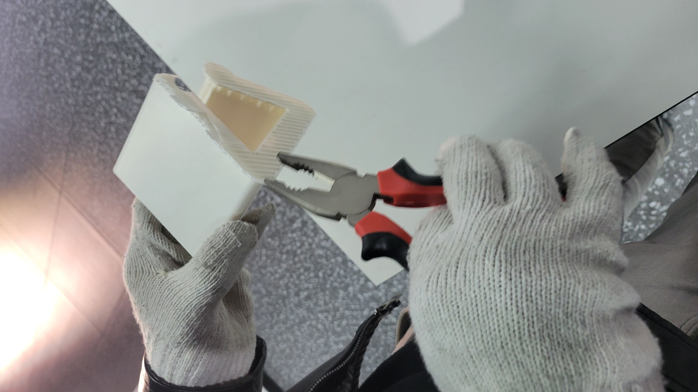
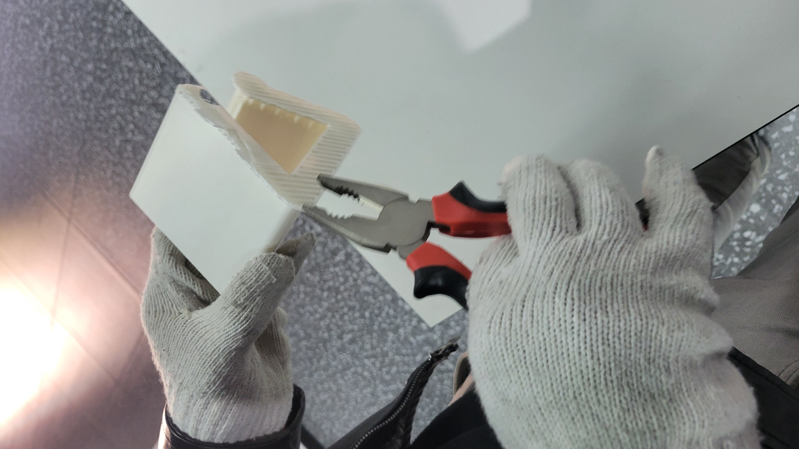
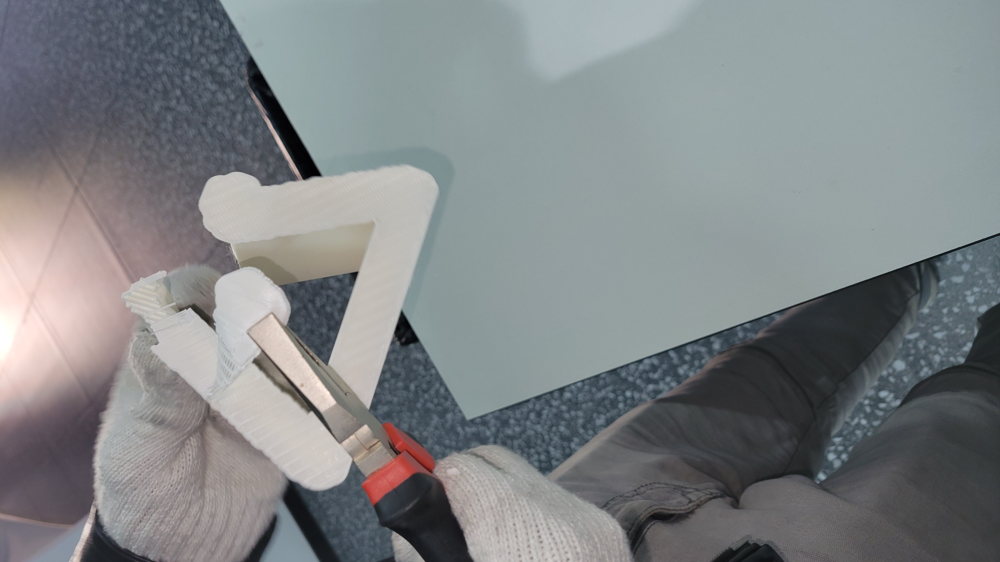
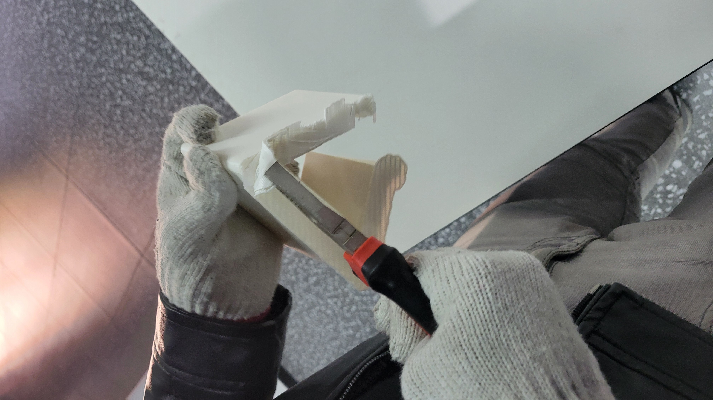
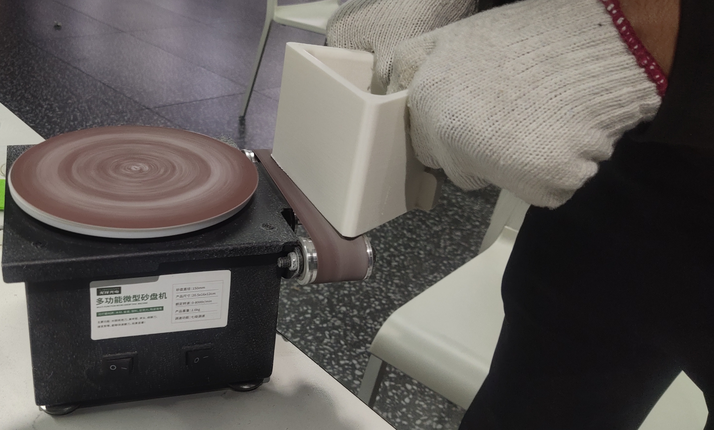
we can compare two of this picture is before and after . When we take out this model from the 3d printing machine then there has attach support(look the left pic) then we postprocess the support from the model.
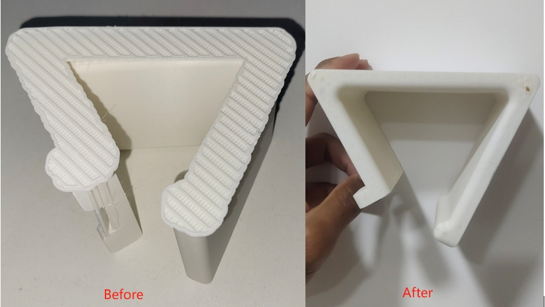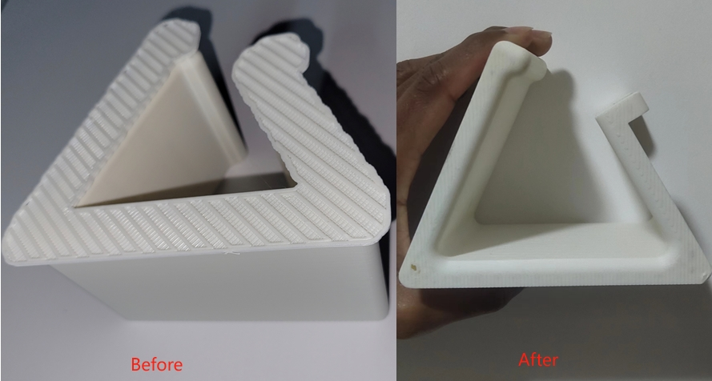
1.5 Final
.jpg)
.jpg)
.jpg)


Assignment 02
Dinosaur
Slicing software: Flash Print(Machine type Guider S series and nozzle: 0.4mm)
Go to file option and Input/load your STL file

STL file is loaded
You can adjust your model scale on the scale optin , which size are you like.
You can also rotate using the rotate function
Now you can use support option
The model must be properly placed in the Pinter's Plate
Now time to slice

Now select your Machine type , which machine you can use and also carefully about platform Temperature. Just one things platform Temperature will depends on your current weather.
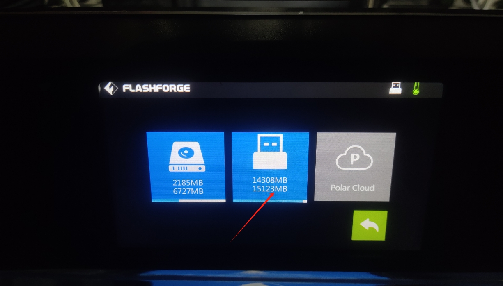When Everything is okay the select the slice button
This is the Slice preview , look the right side there is file name , Estimates print time and materials. And also create g code. The printer can never print the model, Printer just know about G code thats why Printer will print the this G code.
Then click the download button
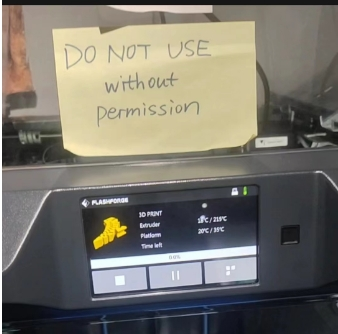And Save as type file name.gx . now slicing is Done

If the machine dont have filament then you can Unload filament and load new filament .

This is the filament
Now look right side the machine and put your USB device on 3D printing machine

After reload the filament , Now time to Build . so, now you can go the build option


pic:23
Read G-Code
Right-click on your gx file and open Notepad, and you can get your model g-code.
deWe have read the g-code and simulated the model above it. We try to date 1 layer and both layer simulations. This is the one-layer simulation.


First layer Simulation

All-layer simulation